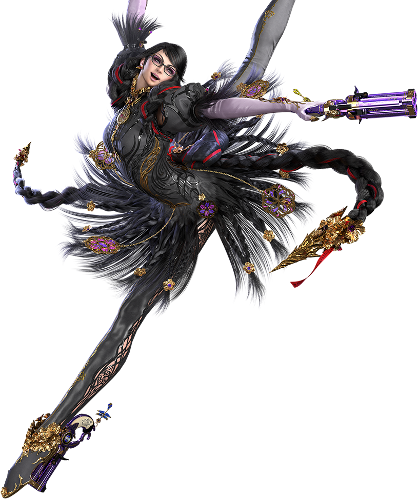

This game follows a powerful Bayonetta that isn’t fighting Angels OR Demons this time, but instead fighting a new world-ending threat that is man-made. The Homunculi.
Bayonetta fights not only for herself, but for the world as she defends the world from this massive threat that’s been Bayonetta’s biggest challenge yet!
In this game Bayonetta is sporting an all-new glorious outfit with new purple guns! A mix of the red guns from Bayonetta 1 and the blue guns from Bayonetta 2!
Thankfully, there are many helpful allies that help Bayonetta on the way. While there is so much to say about this game, anything further would be spoilers for the game, so I will not say them here.